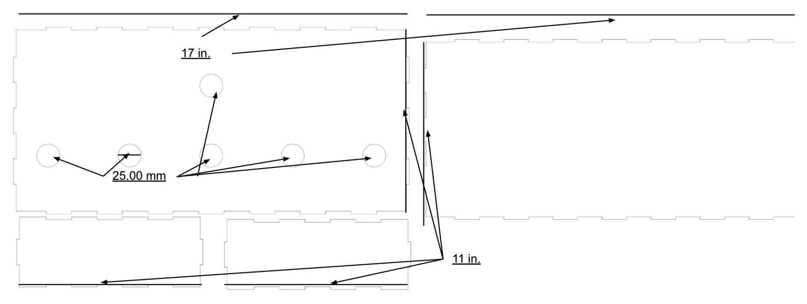
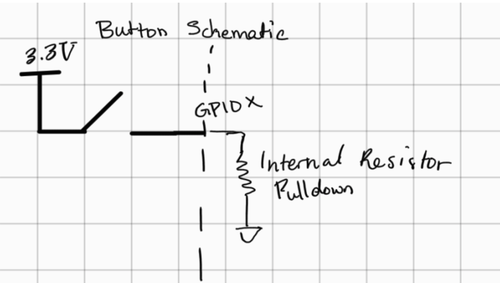
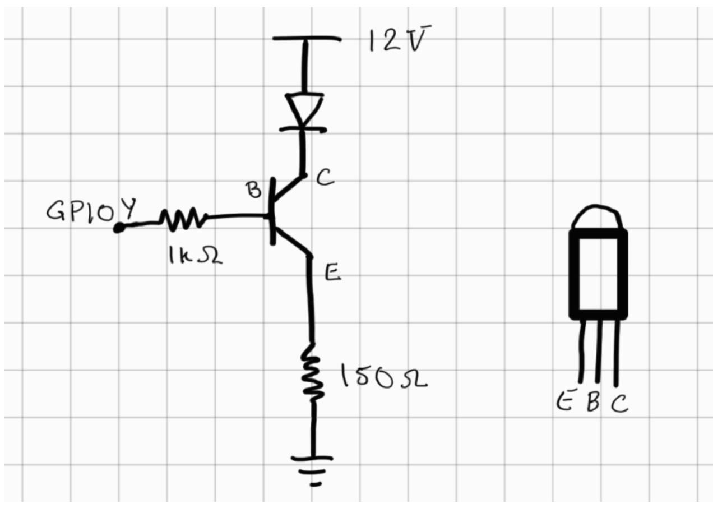
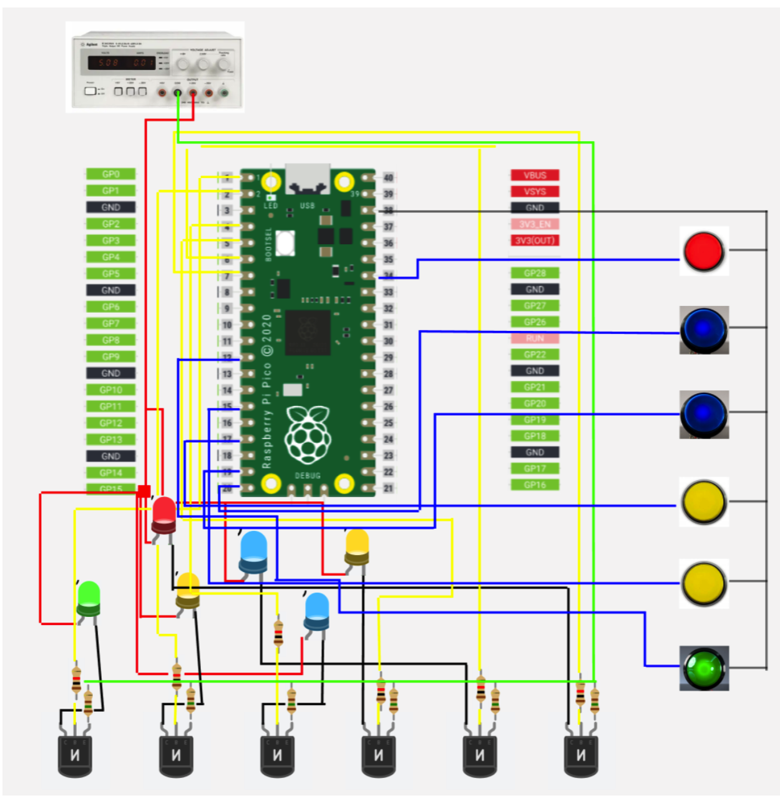
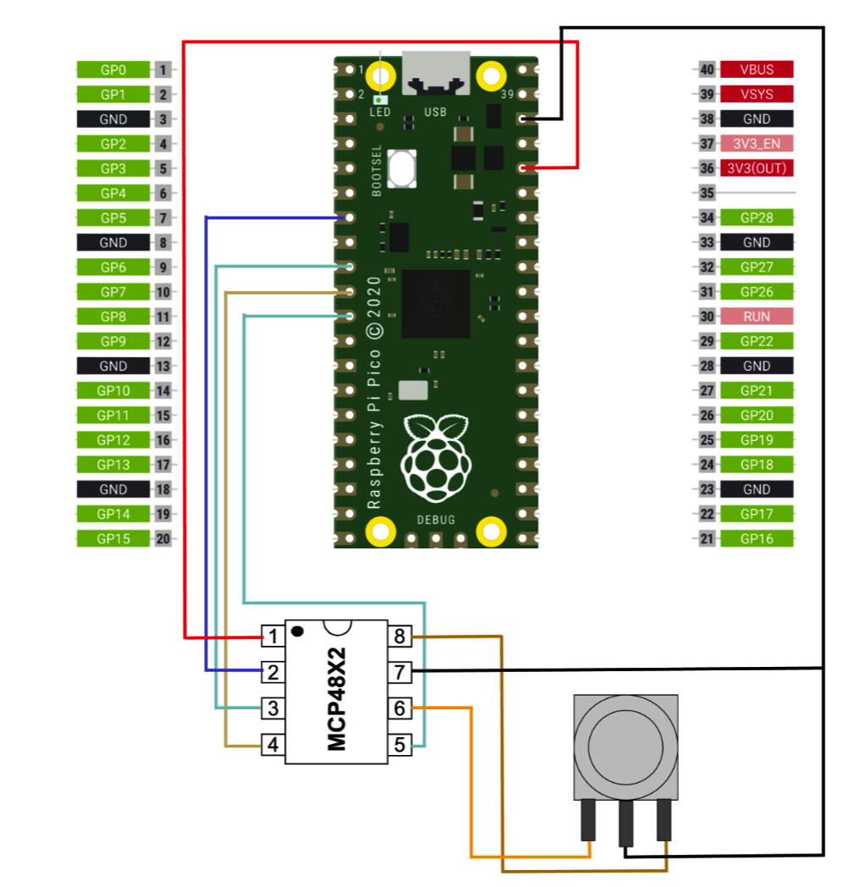
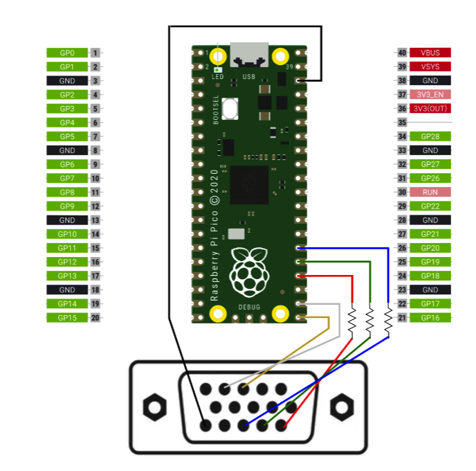

Hardware Design
Buttons and LEDS
The mechanical structure of the game is a wooden box. There is an open front and open back for easy access to parts for assembling and wiring. The only thing that is visible to the player is the buttons on the top of the board. In the figure below, the frames of the box are shown.

Box frames in CAD
After the frame was cut, we installed the 60 mm buttons into it. The game has six buttons connected to this wooden box, each of which has four ports. Two of these ports are used for the button’s output signal that input into the RP2040. One wire is connected to a GPIO pin, and the other wire is connected to ground. The GPIO pins have a built-in resistor and have a voltage of 3.3 V. In the software, we pull up these GPIO pins so that a LOW signal indicates that the button has been pressed. The figure below shows the button circuit.

Button schematic
The other 2 ports on the button control the LED which is connected to a solderboard connected to a 12V power supply. Each LED is individually connected to a 2N3904 transistor. The base of these transistors are then connected to GPIO pins through a 1k ohm resistor. The voltage supply is connected through the LED to the collector of the transistor. The emitter is connected through a 150 ohm resistor to ground.

Transistor circuit with base connecting to GPIO pins
The values for the resistors we received from previous projects are the ones that used these buttons.

Schematic including all buttons and LEDS - note that buttons and LEDs are together in real life, but we separated them here to simplify visuals
Audio
We also utilized the RP2040’s SPI features to output audio that was generated via direct digital synthesis. A MCP4802/4812/4822 DAC was used to take in this SPI signal from the RP2040 and convert it from a digital signal to an analog signal. Both of the DAC’s input channels were used as we did generate some audio concurrently whenever a user pressed more than one button at once. The output of the DAC was then connected to a 3.5 mm audio socket (aux) which allowed for a speaker to be plugged-in to synthesize our audio. A diagram of this circuit is shown below.

Schematic for sound production part of our project
Visuals
For the visuals, we used a VGA screen and a VGA library that used DMA to send data to the VGA monitor without using up an CPU cycles. This library abstracted everything for us nicely so that we only had to use high-level functions such as drawRect() and fillRect(). As for the hardware aspect, we wired HSync and VSync directly from RP2040 ports, as well as the R, G, and B wires, which were connected to the VGA cable using 330 ohm resistors. A schematic of this can be seen below.

Schematic for VGA connections.\
Designs Originating from Other Sources
The only thing we took from other sources was the board design. For this, we used a similar design to one of last year’s projects, called Whack-a-Button. We did create our own board and circuitry, but we did use the same buttons and our design was inspired by theirs.
Things We Tried That Didn’t Work
From the hardware side of things, our buttons didn’t originally work. We did explain in detail in the Program Design section how we fixed this.